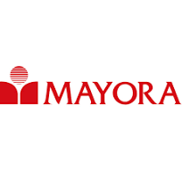

Job
Cari peluang terbaik untuk kariermu
Staff Administrasi

PT Indofood Sukses Makmur Tbk
Menangani dokumen, arsip, dan laporan kantor.
Lokasi: Jakarta
Jam Kerja: Full-time
Lihat DetailTeknisi Mesin Produksi

PT Industri Jamu dan Farmasi Sido Muncul Tbk
Memastikan mesin produksi berjalan optimal dan melakukan perawatan berkala.
Lokasi: Semarang
Jam Kerja: Full-time
Lihat DetailIT Support

PT Sinar Sosro
Menangani troubleshooting sistem dan perawatan perangkat IT perusahaan.
Lokasi: Bekasi
Jam Kerja: Full-time
Lihat DetailKaryawan Outlet
PT Esteh Indonesia Makmur
Melayani pelanggan dan menjaga kebersihan outlet.
Lokasi: Semarang
Jam Kerja: Part-time
Lihat DetailIT Support
PT Mayora Indah Tbk
Menangani masalah teknis perangkat keras dan lunak.
Lokasi: Jakarta
Jam Kerja: Remote
Lihat DetailKoki

UMKM Tahu Gila
Memasak menu andalan tahu gila dan menjaga kualitas rasa makanan.
Lokasi: Yogyakarta
Jam Kerja: Part-time
Lihat DetailMarketing Specialist

PT Kapal Api Global
Mengembangkan strategi pemasaran dan analisis pasar kopi lokal dan internasional.
Lokasi: Surabaya
Jam Kerja: Full-time
Lihat DetailTeknisi Mesin

PT Nippon Indosari Corpindo Tbk
Merawat dan memperbaiki peralatan produksi pabrik.
Lokasi: Yogyakarta
Jam Kerja: Full-time
Lihat DetailAdministrasi Perkantoran

PT Cipta Abadi Sejahtera
Mengelola data, menyusun laporan, dan mendukung operasional kantor harian.
Lokasi: Semarang, Jawa Tengah
Jam Kerja: Full-time
Lihat DetailDokter Gigi

Klinik Senyum Ceria
Melayani pasien gigi dan memberikan perawatan medis di klinik atau rumah sakit.
Lokasi: Yogyakarta, DI Yogyakarta
Jam Kerja: Full-time
Lihat DetailGraphic Designer

CV Kreasi Visual Mandiri
Mendesain materi visual untuk kampanye digital dan cetak perusahaan.
Lokasi: Jakarta Selatan, DKI Jakarta
Jam Kerja: Full-time
Lihat DetailGuru SD

SD Islam Terpadu Al-Madina
Mengajar siswa sekolah dasar dan menyusun rencana pembelajaran harian.
Lokasi: Kendal, Jawa Tengah
Jam Kerja: Full-time
Lihat DetailIT Support

PT Teknologi Nusantara
Menangani masalah teknis perangkat dan jaringan, serta mendukung operasional IT.
Lokasi: Bandung, Jawa Barat
Jam Kerja: Full-time
Lihat DetailKoki

Restoran Rasa Nusantara
Menyiapkan dan memasak makanan sesuai standar restoran atau hotel.
Lokasi: Surabaya, Jawa Timur
Jam Kerja: Full-time
Lihat DetailDigital Marketing
PT Promosi Digital Indonesia
Meningkatkan visibilitas online perusahaan melalui strategi digital.
Lokasi: Jakarta Barat, DKI Jakarta
Jam Kerja: Internship
Lihat DetailTeknisi Mesin

PT Karawang Mekanika
Memelihara dan memperbaiki mesin produksi di pabrik atau industri.
Lokasi: Karawang, Jawa Barat
Jam Kerja: Full-time
Lihat Detail